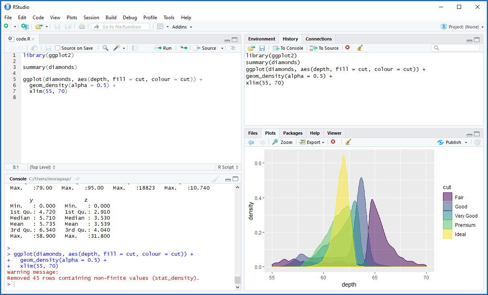
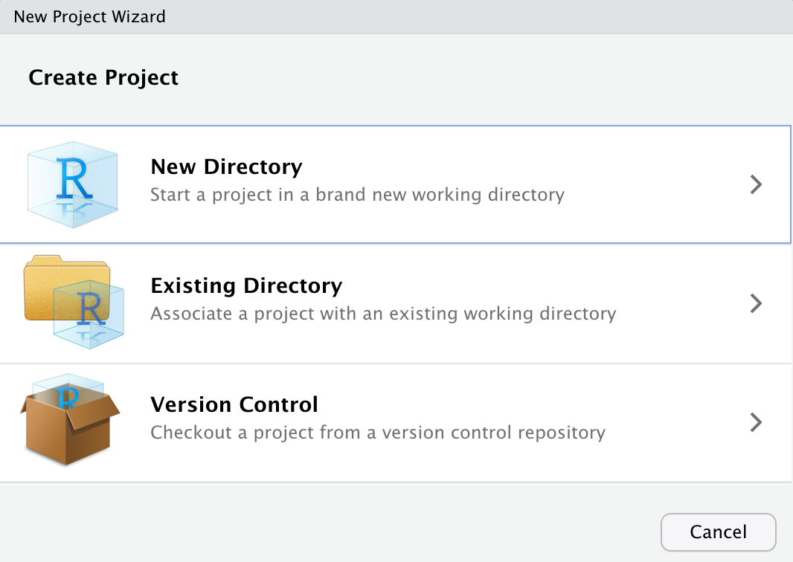
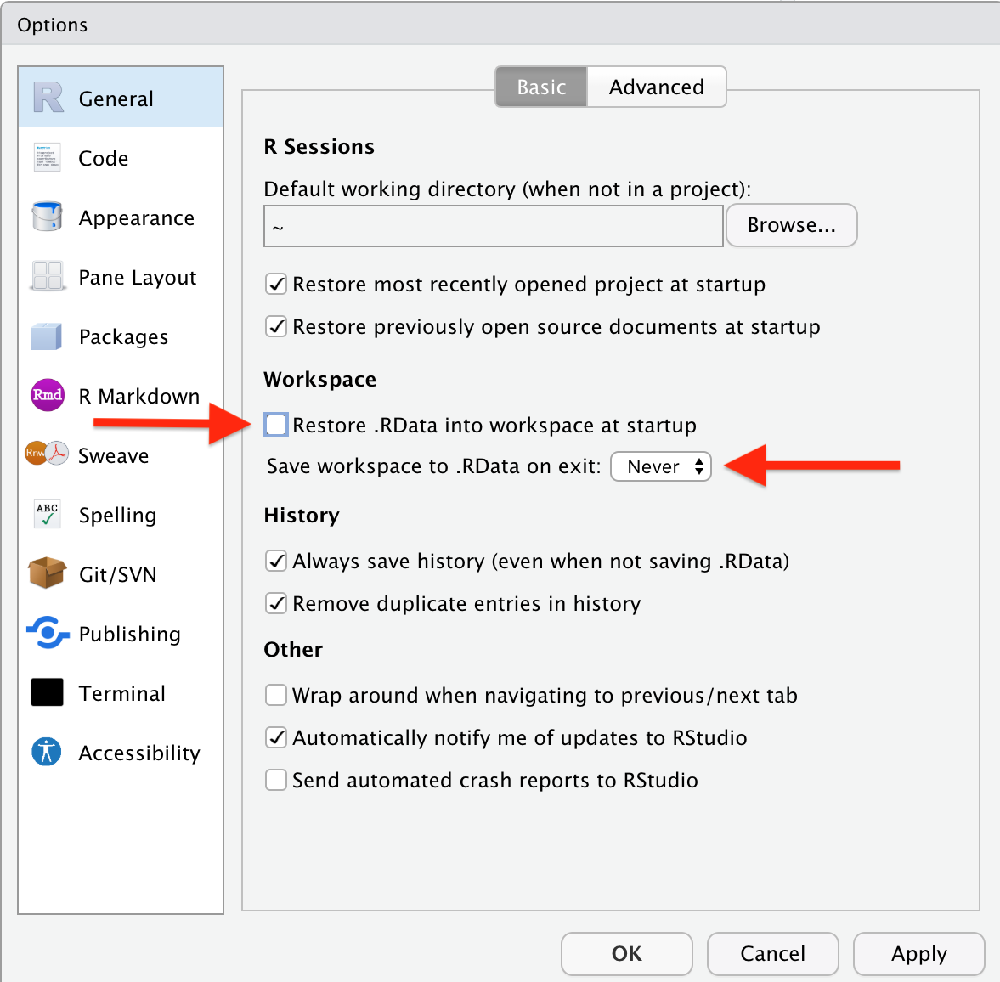

2 Getting Started & Setting Up
Before we dive into using R, let’s get set up with the necessary software and tools. This section will cover downloading and installing R, as well as an integrated development environment (IDE) such as RStudio. We’ll also cover the basics of working with the R console and executing code.
2.1 Installing R
To download R, go to the CRAN (Comprehensive R Archive Network) website
Choose to download R for either Linux, Mac or Windows by following the corresponding links as shown in Fig 1, depending on the Operating System of your Laptop Or Desktop.
The version of R that you should download is called the (base) binary. Download and run it to install R. You may see mentions of 64-bit and 32-bit versions of R; if you have a modern computer (which in this case means a computer from 2010 or later), you should go with the 64-bit version.
2.2 Installing R Studio
You have now installed the R programming language. Working with it is easier with an IDE (Integrated Development Environment), which allows you to easily write, run and debug your code.
This book is written for use with the RStudio IDE, but 99.9 % of it will work equally well with other IDE’s, like Emacs with ESS or Jupyter notebooks.
R Studio IDE got useful features you’d expect from a coding platform, such as syntax highlighting and tab for suggested code auto-completion. I also like its four-pane workspace, which better manages multiple R windows for typing commands, storing scripts, viewing command histories, viewing visualizations and more.
To download RStudio, go to the RStudio download page. Click on the link to download the installer for your operating system, and then run it.
2.3 Exploring R Studio Interface
When you launch RStudio, you will see three or four panels: If you launch RStudio by opening a file with R code, the Script panel will appear, otherwise it won’t. Don’t worry if you don’t see it at this point - you’ll learn how to open it soon enough.
The top left window is where you’ll probably do most of your work. That’s the R code editor (Script) allowing you to create a file with multiple lines of R code — or open an existing file — and then run the entire file or portions of it.
Bottom left is the interactive console where you can type in R statements one line at a time. Any lines of code that are run from the editor window also appear in the console.
The top right window shows your workspace, which includes a list of objects currently in memory. There’s also a history tab with a list of your prior commands; what’s handy there is that you can select one, some or all of those lines of code and one click to send them either to the console or to whatever file is active in your code editor.
The window at bottom right shows a plot if you’ve created a data visualization with your R code. There’s a history of previous plots and an option to export a plot to an image file or PDF. This window also shows external packages (R extensions) that are available on your system, files in your working directory and help files when called from the console.
2.4 Basic things to know
2.4.1 Installing Packages
R comes with a ton of functions, but of course these cannot cover all possible things that you may want to do with your data. That’s where packages come in. A Packages is a collection of functions, datasets and documentation/help that add new features to R.
Do you want to apply some obscure statistical test to your data? Plot your data on a map? Run C++ code in R? Speed up some part of your data handling process? There are R packages for that.
In fact, with more than 100,000 packages, there are R packages for just about anything that you could possibly want to do. All packages have been contributed by the R community.
Most R packages are available from CRAN, the official R repository - a network of servers (mirrors). Packages on CRAN are checked before they are published, to make sure that they do what they are supposed to do and don’t contain malicious components. Downloading packages from CRAN is therefore generally considered to be safe.
In the rest of this guide, we’ll make use of a package called tidyverse, which gives additional features fro data Wrangling. To install the package from CRAN, you can either select Packages > Install on the RStudio bottom right pane and then write tidyverse in the text box in the pop-up window that appears, or use the following line of code in the console or script:
install.packages("tidyverse")As R downloads and installs the packages, a number of technical messages are printed in the Console pane (below is an example of what these messages)
* DONE (ggplot2)Or, on some systems,
package ‘ggplot2’ successfully unpacked and MD5 sums checkedIf the installation fails for some reason, there will usually be an error message. You can read more about troubleshooting errors in and there is also a list of common problems when installing packages available on the RStudio support page at https://support.rstudio.com/hc/en-us/articles/200554786-Problem-Installing-Packages.
2.4.2 Loading Packages
After you’ve installed the package, you’re still not finished quite yet. The package may have been installed, but its functions and datasets won’t be available until you load it. This is something that you need to do each time that you start a new R session. Luckily, it is done with a single short line of code using the library function.
2.4.3 Working Directory
A working directory is a folder on your computer where R reads and saves files. I recommend you to always set the working directory before working with R.
You can set the working directory by using setwd(). Specify the path to the folder inside the parentheses with forward slanting slashes.
Note that the slashes always have to be forward slashes, even if you're on a Windows system. For Windows, the command might look something like:
setwd("C/users/desktop/R Practice")The current working directory can be checked by using
getwd()2.4.4 Getting Help
One of the most important features that you will need as you start on your path to becoming and R user is getting help. No matter how skilled of a programmer you are, you always encounter new functions and need help understanding how to use them. We will take some time to explore the help features in R.
The help() Function
To get online help within an R session we use the help() function. This will allow us to see the documentation on a function that we are interested in.
Lets say for example that we wish to to make a sequence. We may read from a blog post or online website that we can do this with a function called seq(). Unfortunately for us most people do not really display how to use the functions that they list. Have no fear! R will help:
{r eval=FALSE}
help(seq)Many times we do not know exactly which function we can use. In order to ask R for help in this case we can actually search all the packages we have for a keyword or phrase.
For example if we wanted to know about math symbols we could type the following:
Enter the above searches into RStudio to see what you get.
The example() Function
Many times we just need to see some examples rather than read the entire documentation of a function or command. In this situation we would use the example() function
example(seq)We can then see numerous examples that R has run for us. The benefit of this command comes when you are interested in seeing examples of graphics, where just seeing the command and not the final product may not be as intuitive for us
Consider below where we might be interested in some perspective plots. When you enter this into RStudio you will see some of the beautiful graphics that R can do:
example(persp)The help.search() function
help.search() will search all sources of documentation and return those that match the search string. ?? is a shortcut for help.search() and returns the same information.
help.search("regression")
`?`(`?`(regression))Internet Help
Aside from these areas of help another method is to search the internet for further help. Here are some other resources:
2.4.5 Keyboard ShortCuts
Knowing RStudio keyboard shortcuts will save lots of time when programming. RStudio provides dozens of useful shortcuts that you can access through the menu at the top: Tools > Keyboard Shortcuts Help. Below are some of my favourites :-
Tab is a generic auto-complete function. If you start typing in the console or editor and hit the tab key, RStudio will suggest functions or file names; simply select the one you want and hit either tab or enter to accept it.
Control + the up arrow (command + up arrow on a Mac) is a similar autocomplete tool. Start typing and hit that key combination, and it shows you a list of every command you’ve typed starting with those keys. Select the one you want and hit return/enter. This works only in the interactive console, not in the code editor window.
Control + enter (command + enter on a Mac) takes the current line of code in the editor, sends it to the console and executes it. If you select multiple lines of code in the editor and then hit ctrl/cmd + enter, all of them will run.
Insert the
<-assignment operator withOption + -on a Mac, orAlt + -on Windows.Insert the pipe operator
%>%withCommand + Shift + Mon a Mac, orCtrl + Shift + Mon Windows.Run all lines of code with
Command + A + Enteron a Mac orControl + A + Enteron Windows.Restart the current R session and start fresh with
Command + Shift + F10on a Mac orControl + Shift + F10on Windows.Comment or uncomment lines with
Command + Shift + Con a Mac orControl + Shift + Con Windows.
For more about RStudio features, including a full list of keyboard shortcuts, head to the online documentation.
2.5 R files & Objects
2.5.1 RStudio Projects
RStudio offers a powerful feature to keep you organized; Projects. It is important to stay organized when you work on multiple analyses. Projects from RStudio allow you to keep all of your important work in one place, including code scripts, plots, figures, results, and datasets.
Create a new project by navigating to the File tab in RStudio and select New Project.... Then specify if you would like to create the project in a new directory, or in an existing directory. Here we select New Directory: 
RStudio offers dedicated project types if you are working on an R package, or a Shiny Web Application., bookdown, blogdown etc Here we select New Project, which creates an R project:
Next, we give our project a name. Create project as a subdirectory of is showing where the folder will live on the computer. If we approve of the location select Create Project, if we do not, select “Browse” and choose the location on the computer where this project folder should live.
RStudio Projects are useful when you need to share your work with colleagues. You can send your project file (ending in .Rproj) along with all supporting files, which will make it easier for your colleagues to recreate the working environment and reproduce the results.
2.5.2 Save Your “Real” Work. Delete the Rest.
Practice good housekeeping to avoid unforeseen challenges down the road. If you create an R object worth saving, capture the R code that generated the object in an R script file. Save the R script, but don’t save the environment, or workspace, where the object was created.
To prevent RStudio from saving your workspace, open Preferences > General and un-select the option to restore .RData into workspace at startup. Be sure to specify that you never want to save your workspace, like this:
Now, each time you open RStudio, you will begin with an empty session. None of the code generated from your previous sessions will be remembered. The R script and datasets can be used to recreate the environment from scratch.
Other experts agree that not saving your workspace is best practice when using RStudio.
2.5.3 R Scripts
You can write some simple one time code in the Console, but as your projects become more complex, we write longer blocks of code. If we want to save your work, it is necessary to organize our code into a script. This allows us to keep track of our work on a project, write clean code with plenty of notes, reproduce our work, and share it with others.
In RStudio, we can write scripts in the text editor window at the top left of the interface:
To create a new script, we can use the commands in the file menu, file > New file > New Script Orwe can also use the keyboard shortcut Ctrl + Shift + N.
When we save a script, it has the file extension .R.
2.6 Task 1.1:
If you don’t have R on your computer, follow the above instructions and install it.
If you don’t have R Studio on you Computer, Download and Install it.
Explore and Tour the Panes
-
Install some packages, you can start with these :-
readr, for data import.ggplot2, for data visualization.dplyr, for data manipulation.tidyr, for data tidying.purrr, for functional programming.tibble, for tibbles, a modern re-imagining of dataframes.stringr, for string manipulation.
Load packages of your choice, using library()
Identify the loaded packages using search
-
Create a new Project, a new Script in the project